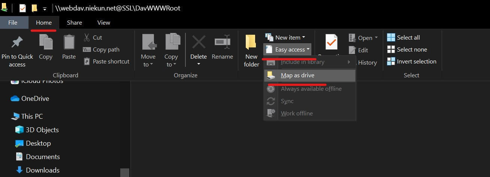
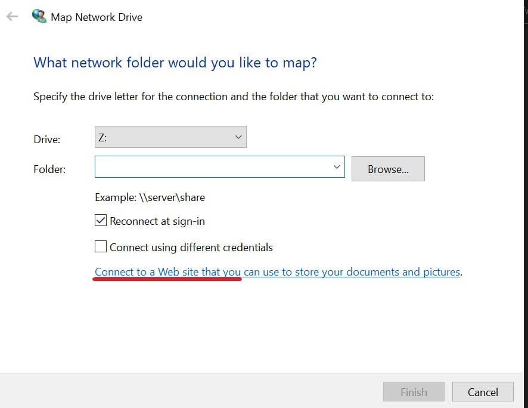
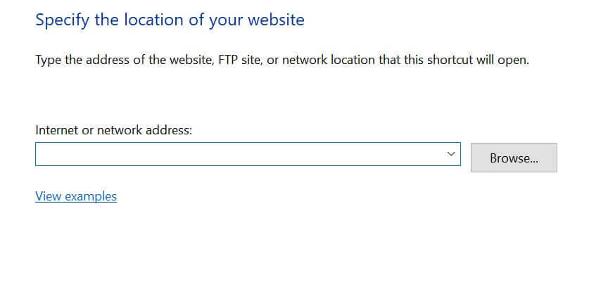

服务器部署 WebDAV 服务
WebDAV(Web-based Distributed Authoring and Versioning) 一种基于 HTTP 1.1协议的通信协议。它扩展了HTTP 1.1在 GET、POST、HEAD等几个HTTP标准方法以外添加了一些新的方法，使应用程序可对Web Server直接读写，并支持写文件锁定(Locking)及解锁(Unlock)，还可以支持文件的版本控制。
简单说 webdav 就像一个网盘，可以远程访问他的目录名对其文件进行读写操作。
WebDAV 允许客户端进行下列操作：
- 处理服务器上 WebDAV 发布目录中的资源
- 具有正确权限的用户可以在 WebDAV目录中复制和移动文件
- 修改与某些资源相关联的属性。例如，用户可写入并检索文件的属性信息
- 锁定并解锁资源以便多个用户可同时读取一个文件。但每次只能有一个人修改文件
- 搜索 WebDAV 目录中的文件的内容和属性
下面介绍如何在服务器上部署 WebDAV 服务。这里通过 nginx 来代理。
编译 nginx
我们通过 nginx 来代理 webdav 服务，nginx 自带有 ngx_http_dav_module 模块，但是其不支持一些 webdav 的 method 如：PROPFIND, OPTIONS, LOCK, UNLOCK。可以通过第三方模块来完整支持 webdav 的特性。
下载以下两个第三方模块：
nginx-dav-ext-module：https://github.com/arut/nginx-dav-ext-module
headers-more-nginx-module：https://github.com/openresty/headers-more-nginx-module
以上两个模块需要在编译时通过 --add-module 参数来引入模块，同时需要包含 --with-http_dav_module 模块，否则编译会报错。
从源码编译 nginx 参考我之前的教程：https://blog.niekun.net/archives/30.html
我使用的完整的编译参数如下：
./configure --prefix=/opt/nginx-1.19.6 \
--user=nginx --group=nginx \
--with-compat --with-file-aio --with-threads \
--with-http_addition_module --with-http_auth_request_module --with-http_dav_module --with-http_flv_module --with-http_gunzip_module --with-http_gzip_static_module --with-http_mp4_module --with-http_random_index_module --with-http_realip_module --with-http_secure_link_module --with-http_slice_module --with-http_ssl_module --with-http_stub_status_module --with-http_sub_module --with-http_v2_module \
--with-mail --with-mail_ssl_module \
--with-stream --with-stream_realip_module --with-stream_ssl_module --with-stream_ssl_preread_module \
--add-module=../echo-nginx-module \
--add-module=../ngx-fancyindex \
--add-module=../headers-more-nginx-module \
--add-module=../nginx-dav-ext-module配置文件
nginx 编译安装完成后，需要配置 conf 文件来使 webdav 生效。我提前已经设置了一个单独的子域名来访问 webdav 服务，且使用 ssl 加密。
首先建立 webdav 文件夹并设置正确的权限，否则在读写时会提示权限不足：
mkdir /home/www/webdav
chown -R www-data:www-data /home/www/webdav如果想要限制用户访问，可以使用 ngx_http_auth_basic_module 模块来建立账号访问，具体参考：https://blog.niekun.net/archives/730.html
完整配置文件如下：
dav_ext_lock_zone zone=foo:10m;
server {
listen 443 ssl http2;
listen [::]:443 ssl http2;
server_name webdav.xxx.xxx;
include my-server/ssl;
# 限制访问
auth_basic "Restricted Access";
auth_basic_user_file ../users/.adminpasswd;
# webdav 目录
root /home/www/webdav;
client_body_temp_path /opt/nginx/client_body_temp;
# webdav 设置
dav_access user:rw group:rw all:r;
dav_methods PUT DELETE MKCOL COPY MOVE;
dav_ext_methods PROPFIND OPTIONS LOCK UNLOCK;
dav_ext_lock zone=foo;
create_full_put_path on;
# 优化大文件上传
send_timeout 3600;
client_body_timeout 3600;
keepalive_timeout 3600;
lingering_timeout 3600;
client_max_body_size 2G;
location / {
# 创建文件夹操作时结尾添加斜杠
if ($request_method = MKCOL) {
rewrite ^(.*[^/])$ $1/ break;
}
# 移动文件夹操作时结尾添加斜杠
if (-d $request_filename) {
rewrite ^(.*[^/])$ $1/;
set $md /;
}
set $x $http_destination$request_method;
if ($x ~ [^/]MOVE) {
more_set_input_headers -r "Destination: ${http_destination}${md}";
}
}
# 拒绝 Windows 或 macos 多余文件上传到 webdav 路径
location ~ \.(_.*|DS_Store|Spotlight-V100|TemporaryItems|Trashes|hidden|localized)$ {
access_log off;
error_log off;
if ($request_method = PUT) {
return 403;
}
return 404;
}
location ~ \.metadata_never_index$ {
return 200 "Don't index this drive, Finder!";
}
}注意第一句 dav_ext_lock_zone 要放在 http 块内。否则会报错。
配置文件修改好后，使用下面指令测试配置是否正确：
nginx -t
如果返回 ok 重启服务即可：
systemctl restart nginx
客户端连接
nginx 配置好 webdav 模块并启动后，可以尝试在客户端访问。
Windows 的 file explorer 和 macos 的 finder 都可以直接连接 webdav。
Windows 端
在 file explorer 中点击 home - easy access - map as drive：

在弹出窗口中点击 connect to a web site：

点击 next 在地址栏输入服务器 nginx 定义的 webdav 访问地址：

点击 next 后如果设置了 auth_basic 会提示要求输入账户和密码，输入账户密码后就进入了 webdav 目录了，下面就可以测试新建文件，修改文件等操作。
注意 Windows 中默认只有 https 方式访问的地址才可以设置 auth，否则不会弹出输入账户和密码的提示框，而是直接提示无法访问此地址。如果想要开放 http 方式的 auth 验证，需要修改注册表 HKEY_LOCAL_MACHINE\SYSTEM\CurrentControlSet\Services\WebClient\Parameters\BasicAuthLevel 的值为 2，然后重启系统即可，此键值定义为：
- 0 - Basic authentication disabled
- 1 - Basic authentication enabled for SSL shares only
- 2 or greater - Basic authentication enabled for SSL shares and for non-SSL shares
macos 端
参考链接：
Making Native WebDAV Actually Work on nginx with Finder and Explorer
Nginx repair of WebDAV functionality
Module ngx_http_dav_module
Using Basic Authentication with Windows 7 and Windows Vista WebDAV Client